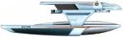
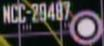

Flotta Stellare - Classe Oberth |
|
|
|  |
| USS Bonestrell NCC-31600 Distrutta a Wolf 359 nella battaglia contro i Borg. | The Best of Both Worlds - Part II | Chesley Bonestell (1888-1986) è un famoso artista astronomico. |
| USS Copernicus NCC-623 Nave attraccata ai bacini orbitali quando la sonda aliena è arrivata su Terra alla ricerca delle balene megattere. | Star Trek IV | Nicolaus Copernicus (Niccolò Copernico) era un astronomo polacco che per primo intuì che fosse la Terra a girare attorno al Sole e non viceversa, come sosteneva Aristotele. |
| USS Grissom NCC-638 Comandata dal Capitano J.T. Esteban e distrutta da un Bird of Prey in orbita attorno a Genesis nel 2285. | Star Trek III | La Grissom è stato disegnato da
David Carson e costruito dall'ILM. Il
modellino è stato ribattezzato e riutilizzato molte volte in
The Next Generation. In Field of Fire si dice che la Grissom è stata distrutta tre mesi prima. Virgil Ivan «Gus» Grissom è un astronauta americano del Mercury morto nel rogo del test dell'Apollo 1 il 27 gennaio 1967, insieme a Edward White e Roger Chaffee. |
| USS Grissom NCC-59314 Distrutta verso la fine del 2374 dai Jem'Hadar nella battaglia di Ricktor Primo. | The Most Toys, Field of Fire | |
| USS Pegasus NCC-53847 Comandata dal capitano Eric Pressman, montava un prototipo di un sistema di occultamento a modifica di fase, ritenuta distrutta nel 2358 a causa di un cedimento dei motori warp; è stata ritrovata nel 2370 all'interno di Gamma 601. | These Are The Voyages..., The Pegasus | Nella mitologia greca Pegaso è un cavallo alato nato dal sangue di
Medusa caduto a terra quando Perseo le tagliò la testa. Sempre nella mitologia greca, l'eroe Bellerofonte (Bellerephon) a cavallo di Pegaso uccise la Chimera (che ha dato il nome ad una classe di astronavi). Vale la pena di ricordare che Chimera e Bellerofonte sono i nomi del virus e dell'antivirus su cui si basa la storia di Mission: Impossible II, la cui prima stesura è di Ronald D. Moore e Brannon Braga. Il numero di registro della nave è un 47. |
| USS Raman NCC-29487 Dispersa nell'atmosfera di Marijne VII nel 2370, i sette marinai sono stati uccisi accidentalmente da una creatura subspaziale che vive nella parte bassa dell'atmosfera del pianeta. | Interface | La
Star Trek Encyclopedia
riporta erroneamente che il numero di scafo di questa nave è 59983, mentre
in Interface si vede in una schermata il
suo vero numero di scafo. Sir Chandrasekhara Venkata Raman (1888-1970) ha ricevuto il premio Nobel per la fisica nel 1930 per l'effetto ottico che porta il suo nome. |
| USS Tsiolkovsky NCC-53911 Costruita nel cosmodromo di Baikonur. Nave scientifica distrutta da un frammento di stella in espansione; l'equipaggio, contagiato dal virus Psi 2000, è morto in seguito alla decompressione causata dall'esplosione di un portello stagno. | The Naked Now | Una copia della targa commemorativa di questa nave è stata inviata al museo di Kaluga, la
città natale di Konstantin Tsiolkovsky, un pioniere dell'esplorazione
spaziale sovietica e il padre dello studio dei razzi nell'Unione Sovietica.
La targa riporta come motto una frase dello stesso Tsiolkovsky: «The Earth
is the cradle of the mind, but one cannot remain in the cradle forever».
Nella targa il nome della nave è scritto in caratteri cirillici. Il modellino della Tsiolkovsky è quello della Grissom di Star Trek III con qualche piccola rifinitura. |
| USS Yosemite NCC-19002 Intrappolata in un flusso di plasma solare. | Realm of Fear | Lo Yosemite è un parco nazionale degli Stati Uniti. |
| SS Vico NAR-18834 Vascello da ricerca distrutto nei pressi del Black Cluster. | Hero Worship | Giambattista Vico (1668-1744) è stato un filosofo e letterato
napoletano. La denominazione NAR-18834 indica che la nave appartiene alla Federazione, ma non alla Flotta Stellare. |
| [Senza Nome] | The Drumhead | |
| [Senza Nome] Ha trasportato Wesley Crusher in licenza sull'Enterprise. | The Game | |
| [Senza Nome] Distrutta dai Borg a Wolf 359. | Emissary | |
| [Senza Nome] Ha trasportato Jadzia Dax e Julian Bashir su Deep Space Nine. | Emissary | |
| [Senza Nome] | Generations |